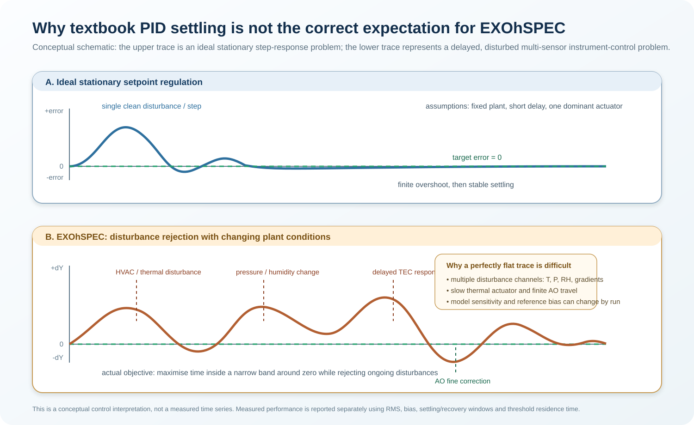

Environmental coupling
Configuration-specific responses near 0.4 µm/hPa and 6 µm/°C show that pressure and temperature produce measurable OPL change.
EXOhSPEC-CLFCD
A research track investigating how environmental change propagates through the EXOhSPEC prototype—and how thermal control, optical-path metrology and bounded active optics can reduce spectral-image drift.

Disturbance rejection
The practical objective is long-duration sub-pixel stability while temperature, pressure, humidity, optical path and actuator history continue to change. This is not a single set-point step response.
Configuration-specific responses near 0.4 µm/hPa and 6 µm/°C show that pressure and temperature produce measurable OPL change.
A selected comparison window reduced dY RMS from 2.72 px to 0.69 px. Interval definition and disturbance history remain essential context.
Long-duration regulation inside ±0.10 px about an unbiased reference has not yet been demonstrated.
2023–2026
Select a stage to trace what was done, what was learned and why the next stage followed.
Mapped the optical, thermal and software system; tested the IDS3010, BME680/ECU, PT104 and early enclosure control. The thesis established the environmental-stability problem and a first feedback architecture.
Two time scales
The slow thermal loop carries coarse drift; the fast optical element handles bounded residual image motion. Cumulative AO travel is monitored so that persistent offsets can be unloaded thermally.
Claims with boundaries

A 44.5 h run achieved σT = 2.47 mK and 17.4 mK peak-to-peak while external temperature changed by about 3.2°C. A separate 9.47 h plateau recorded dY RMS 0.380 px and 90.76% of samples inside ±0.5 px.

The June V4 feedback phase reached dY RMS 0.4975 px with limited AO travel, but retained a mean dY bias of −0.5837 px and no samples inside the strict ±0.10 px band. The reference and disturbance context must stay visible.
Validation path
Choose the zero from a quality-gated late warm-up segment and log every later reference adjustment.
Fit environmental and OPL response on one interval, then test it on unseen data before using it for feed-forward control.
The V25 fan concept is a testable design hypothesis. Fit, vibration, single-fan and push–pull tests are still required.
Complete provenance
The evidence library distinguishes experimental records, controller development, active optics, thermal management, thesis material and review/quality-assurance documents.